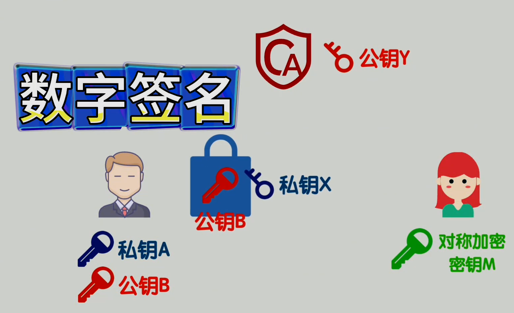
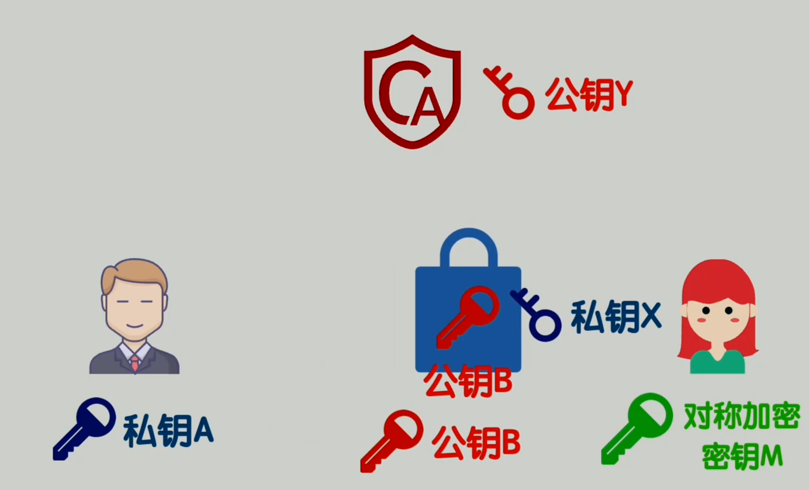
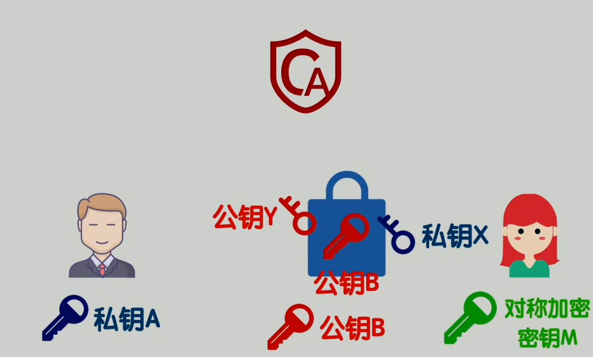
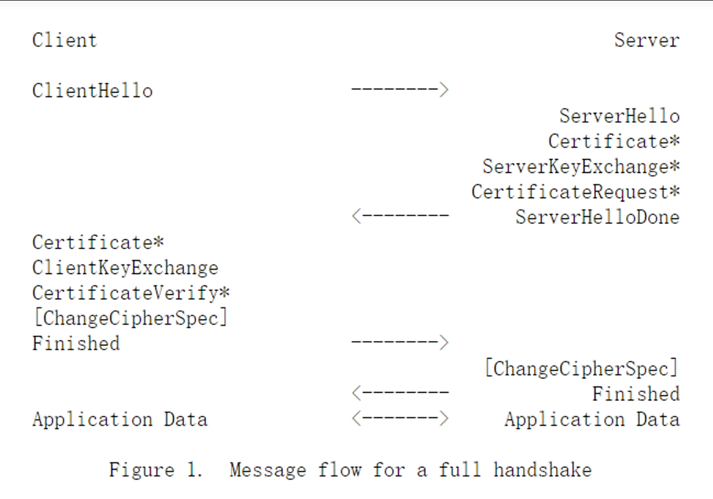

计算机网络-网络安全
目录
SSL是什么？
SSL：Secure Sockets Layer（安全套接字层） SSL证书 就像一个网站的 “数字身份证” 或 “安全护照”。包含数字签名和公钥
原理大致如下(图片引用自飞天闪客视频:你管这破玩意叫HTTPS？)

CA将服务器(左1)的公钥包装在数字证书(SSL证书)中，并用自己的私钥X进行签名
浏览器(右1)预装了CA的根证书，即公钥Y，可以用来验证服务器证书的真实性这时候服务器将自己的明文公钥B，CA提供的数字签名证书一并发送给客户端（浏览器），客户端就可以用CA的公钥Y来对用CA的私钥X加密的公钥B进行解密，并和明文的公钥B进行对比，如果没有问题，则证明数据安全


|
|
CSRF是什么？
什么是CSRF？
CSRF（Cross-Site Request Forgery，跨站请求伪造） 是一种网络攻击方式，攻击者诱使用户在不知情的情况下执行非本意的操作。 攻击原理示例：
- 用户登录了银行网站A，会话cookie有效
- 用户访问恶意网站B
- 网站B包含一个自动提交的表单，向银行网站A发起转账请求
- 浏览器自动携带银行网站的cookie，请求被执行
CSRF保护机制
常见的CSRF防护措施：
- CSRF Token：
- 服务器生成随机token嵌入表单
- 提交时验证token有效性
- 示例：
<input type="hidden" name="csrf_token" value="abc123">
- SameSite Cookie属性：
SameSite=Strict：完全禁止跨站cookieSameSite=Lax：宽松模式，允许部分安全操作
- 验证Referer/Origin头：
- 检查请求来源是否在白名单内
- 防止跨站请求
为什么Nginx代理会触发CSRF保护？
根本原因：源（Origin）不匹配
- 原始访问：
- 客户端 → Syncthing (
localhost:8384) - Origin:
http://localhost:8384
- 客户端 → Syncthing (
- 代理访问：
- 客户端 → Nginx (
your-domain.com) → Syncthing (localhost:8384) - 实际Origin:
http://your-domain.com - Syncthing期望的Origin:
http://localhost:8384
- 客户端 → Nginx (